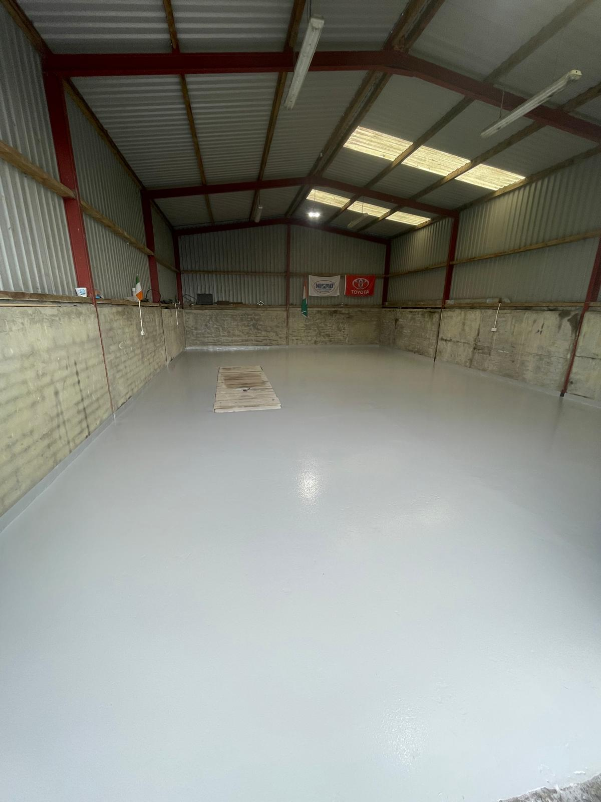
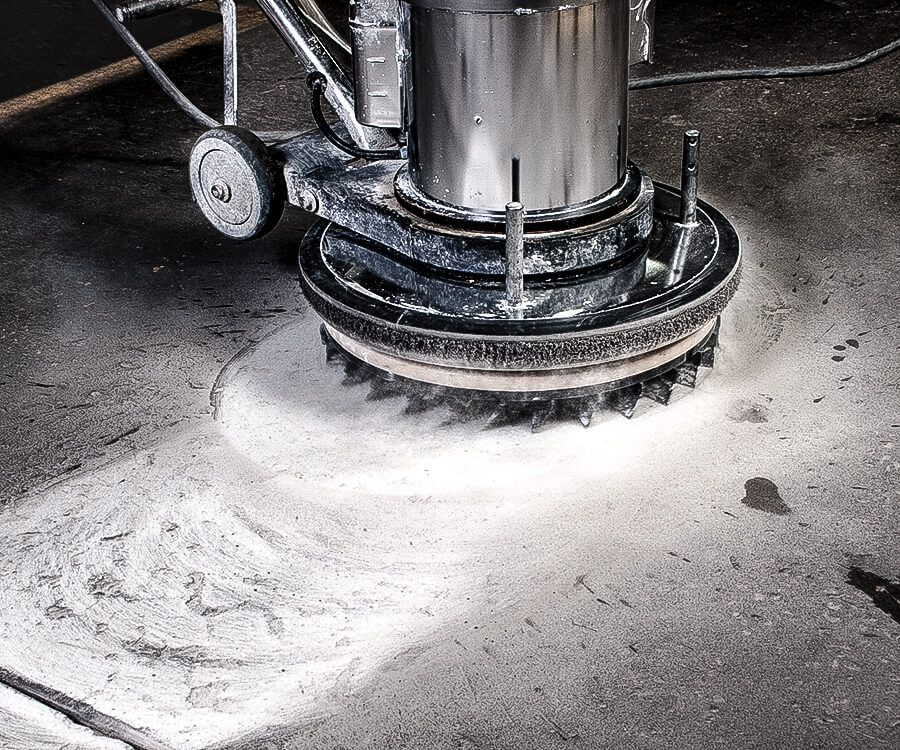
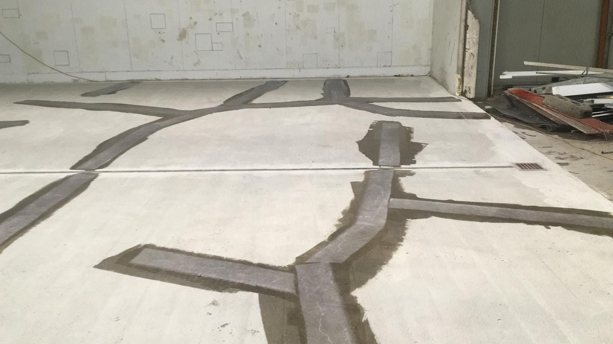

Epoxy Flooring
Hard-wearing epoxy resin floors for warehouses, factories, kitchens and workshops: forklift-ready and chemical resistant.
Epoxy FlooringClear, durable line markings are essential for safe traffic flow and organisation. Casian IRF marks out parking bays, directional arrows, pedestrian crossings, forklift routes and safety zones using high-visibility, long-lasting marking systems.
Clear separation of pedestrians, vehicles and forklifts.
Bays, arrows and lanes keep vehicles moving the right way.
Marked walkways and hazard zones support your site safety plan.
Bright, durable colours that stay readable.
Systems chosen to suit indoor or outdoor use and traffic levels.
We can help design the layout as well as apply it.
Bay layouts, numbering, disabled and visitor bays.
Directional arrows, centre lines and edge lines.
Walkways, forklift lanes, racking lines and hazard zones.
Court lines, playground boundaries and multi-use markings.
Crossings and protected walkways.
Fire lanes, exclusion areas and warning stripes.
Painted lines on bare concrete wear away quickly under forklifts and car tyres. We use resin-based marking systems suited to the surface and traffic, and where we’re installing a new resin floor we build the markings into the job so they’re as durable as the floor itself.
Whether it’s a new layout for a warehouse, re-lining a faded car park or adding pedestrian routes to meet a safety audit, we can survey the site, agree the layout with you and complete the work with minimal disruption.
Yes. We can refresh faded markings to the existing layout or set out a new layout, for example to add bays, EV or accessible spaces.
Usually, by working in sections or outside opening hours. We’ll agree a plan to keep traffic moving safely.
Yes. We mark out existing concrete and resin floors as well as including markings in new floors we install.
Tell us about your floor and we’ll come back to you with advice and a quote. We’re fully insured and work on sites of every size, anywhere in Ireland.

Hard-wearing epoxy resin floors for warehouses, factories, kitchens and workshops: forklift-ready and chemical resistant.
Epoxy Flooring
Shot-blasting, diamond grinding, moisture testing and levelling: the groundwork every resin floor depends on.
Floor Preparation
Crack repairs, spall patching, seal-coat renewals and maintenance contracts to extend floor life.
Repairs & Maintenance